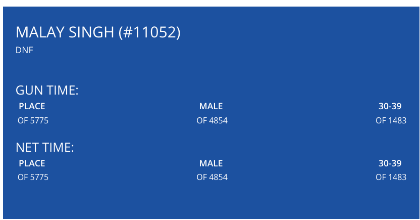

Malay SINGH
Hobbies
In my leisure time I generally do photography, swimming, running, and learning a new thing in VIM, LaTeX, gnuplot and other useful things. Please find some useful stuff here.
Running Summary at Strava and ParkRun
I frequently go for ParkRun at the East Coast Park. My ParkRun Results.
Past Races
Marina Run 2023: 21km

OSIM Sundown Marathon 2023: 42km
2XU Compression Run 2023: 21km
Standard Chartered 2022: 42km

London Marathon 2022 Virtual: 42km
London Marathon 2021 Virtual: 42km
Standard Chartered 2019: 42km

SG Ultra Marathon 2019: 50km

RUN NUS 2019: 15km

Spartan Super Bukit Timah 2019: 13km, 25 obstackes

Race Against Cancer 2019: 15km

OSIM Sundown Marathon 2019: 42km

2XU Compression Run 2019: 21km

Marina Run 2019: 30km

Standard Chartered 2018: 21km

RUN NUS 2018: 10km

Vim - The King of Editors
I use Vim editor for development. I have been using NERDTree and NERDCommenter plugins for a long time. Please find my vimrc file here. You can find some cool Vim Color Schemes to your taste here.
LaTeX
LaTeX is the high - quality document preparation system.
- Want to make posters for conferences, workshops etc using LaTeX? Brian Amberg has developed a very good LaTeX Poster template. You can find it on his homepage.
- Want to make presentations? LaTeX to rescue. Beamer is very good LaTeX Class for creating presentations.
-
Following are some good links regarding creating Tables in LaTeX.
Multirow at Stackexchange,
LaTeX Table Tips,
Vertical Alignment in multirow,
Long Tables Spanning multiple pages. A LaTeX template for suggested usage of longtable . - Want to record the Minutes of a Meeting using LaTeX? Please use the LaTeX template for Minutes document here .
gnuplot
Gnuplot is a portable command-line driven graphing utility. Following are some useful scripts and links:
- A good gnuplot 4.2 tutorial. The latest version of gnuplot is 5.0. Some of the commands on this tutorial may not work properly in the latest version.
- gnuplot 5.0 script plot_force.p to plot data from the file force.dat. Plot by this script: forceplot.ps.
- gnuplot 5.0 script fitcurve.p to fit a curve using data from the file force.dat. Plot by this script: fitcurve.ps.